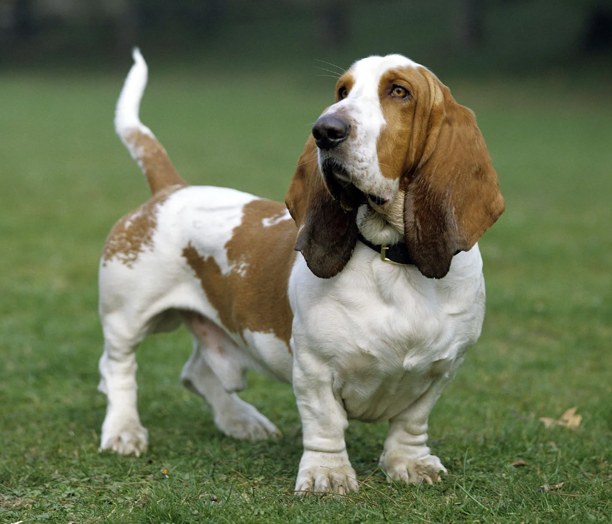

BASSET
Weight:
40-60 lbs.
Height :
13 in.
14 in.
Length:
Short.
Color:
Any recognized hound color.
Longevity:
8 – 12 yrs.
Basset personality
The basset hound is a friendly, easygoing dog. Originally hunting in packs, they tend to be good with other dogs and other pets in general. Bassets are people oriented and get along well with children. Fairly smart dogs, bassets are not easy to train as they are somewhat stubborn. A firm, patient hand with plenty of creativity is required to bring out the best in them. Bassets can be serious barkers and with their sturdy feet and nails they tend to be diggers. The hunting urge is still quite strong and if not safely confined they will go off hunting on their own.
What to expect
Basset hounds need a firm person in charge of their feeding as they have a definite tendency to become obese, which can cause serious problems with their long backs. Bassets are not high-powered athletes who need to run every day, but they should have a good long walk at least once daily to keep them fit. Most bassets live to 12 or 13 years. Having developed as pack animals, basset hounds do feel a need for company and are happiest when they have their families around. They are not great watchdogs. Although they may bark, but they then greet strangers happily. The loose lips lead to a fair amount of drooling and many owners keep towels strategically placed around the house for cleanup. Bassets left alone to their own devices can easily become nuisance barkers or diggers. Bassets are fairly intelligent dogs, but they are not the easiest to train. Start training right off with puppies and do plenty of positive training to keep them interested. They enjoy tracking and hunting, even if only as a casual pastime. Grooming is fairly quick and easy and involves just a swipe with a brush once or twice a week. In between groomings, the basset may track a great deal of mud or dirt into the house because of their low stature and big feet.
History of the Basset
The basset hound comes from as far back as the 1500s when the pre-revolutionary French were using low slung, heavy-bodied hounds to trail rabbits. The word bas is French for low befitting the basset hound's stature. A number of the short, bowlegged French hunting dogs and the basset hound we recognize today were fine-tuned in England in the 1800s. With the exception of height and leg conformation, they are similar to the St. Hubert's hound. Bassets were selected not only for their outstanding scenting skills, but also because hunters could keep up with the slow-paced dogs. They not only hunted rabbits and hares, but were also sometimes used to track larger wounded game. In the United States, the Basset quickly moved on from hunting dog to family pet. Familiarized to the public by cartoons, such as Fred the Basset, and in commercials, such as Hush Puppies™ shoes, the basset hound is now primarily a companion dog